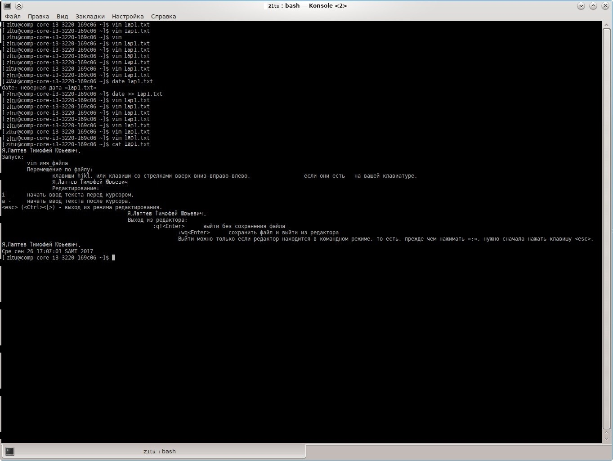

Тема: Редактирование файлов.
Задание:
Открыть терминал (К → Система → Терминал ( Konsole)). После запуска терминала, в его окне появится приглашение вида
[login@имя компа] $
Курсор в виде белого прямоугольника установится после знака «$». То есть, ваши команды будут вводиться после этого знака.
Знак «$» - это приглашение к вводу для обычного пользователя (в отличие от root'а, для которого знак приглашения - «#»).
Таким образом, после знака «$» вы вводите команду, Linux её выполняет, что-то выдаёт на экран (если у неё есть вам сказать пару слов, то она вам скажет, а если нет, то выполнит вашу команду молча) и, если команда выполнена, то Linux снова выдаёт знак «$», приглашая вас вводить следующую команду. Ввод команды всегда завершается нажатием клавиши Enter, только после Enter система начинает выполнять команду.
Если вы Enter нажали, курсор перешёл на следующую строку
и . . . всё,
знак $ не появляется. Это означает, что Linux ждёт ваших дальнейших действий. Примеры подобных команд есть в лабораторной 6 (xterm).
Далее в задании будет опускаться содержимое квадратных скобок ([login@имя компа]), а будет указываться только символ «$».
Внимание: При сдаче лабы возможно придётся отвечать на вопросы о назначении и смысле команд. Мануал по команде:
$ man (команда) (Enter)
В том числе можно получить справку и по самой системе man:
$ man man (Enter)
Например, руководство по команде vim:
$ man vim (Enter)
Итак, начали.
2. Прежде всего, убедитесь, что вы находитесь в своём домашнем каталоге. Это можно сделать командой:
$ pwd
Если вы не в домашнем каталоге, то перейти в домащний каталог.
3. Создать файл с именем = фио (например, obama_b.txt) командой
$ vim (имя_файла)
4. Нажать клавишу a (латинская «a»).
Ввести следующую информацию «Я, (фамилия имя отчество), группа (группа), лабораторная №4».
Нажать клавишу Esc.
Выйти из редактора с сохранением. Для этого последовательно нажать клавиши : («двоеточие» на основной клавиатуре!), w, q, Enter.
5. Снова открыть файл. Перейти в режим редактирования и добавить в этот файл две пустых строки.
6. Далее ввести следующую информацию (зелёный текст):
Запуск:
vim имя_файла
Перемещение по файлу:
клавиши hjkl, или клавиши со стрелками вверх-вниз-вправо-влево, если они есть на вашей клавиатуре.
7. С новой строки ввести следующую информацию «Я, (фамилия имя отчество)». Выйти из редактора с сохранением.
8. Снова открыть файл. Добавить в конец файла следующую информацию (зелёный текст):
Редактирование:
i - начать ввод текста перед курсором,
a - начать ввод текста после курсора,
(esc) ((Ctrl)([)) - выход из режима редактирования.
9. С новой строки ввести следующую информацию «Я, фамилия имя отчествo». Выйти из редактора с сохранением.
10. Снова открыть файл. Добавить в конец файла следующую информацию (зелёный текст):
Выход из редактора:
:q!(Enter) выйти без сохранения файла
:wq(Enter) сохранить файл и выйти из редактора
Выйти можно только если редактор находится в командном режиме, то есть, прежде чем нажимать «:», нужно сначала нажать клавишу (esc).
11. Выйти из редактора с сохранением файла.
12. Добавить в этот файл дату командой «date».
13. Нажать на клавиатуре клавишу PrintScreen. В открывшемся окне программы Ksnapshot клавишей (Сохранить как . . .) сохранить скрин окна экрана в файл laba04.jpg в свой домашний каталог.
